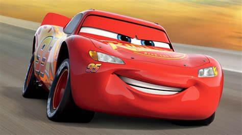

Rayo mcqueen⚡
El Rayo McQueen (Lightning McQueen en inglés) McQueen es uno de los personajes protagonistas principales de la franquicia de Disney/Pixar Cars.
El es un automóvil de carreras de color rojo que logró participar en la Copa Pistón cuando apenas era un novato.
Sin embargo, cuando él rechazó reemplazar sus neumáticos a la mitad de una carrera, haciendo que sus neumáticos traseros estallaran, terminó quedando empatando con "El Rey" y Chick Hicks.
Rayo vive en un pequeño pueblo del desierto llamado Radiador Springs.
Hasta que en Cars 3, Rayo se estrelló en la carrera contra Jackson Storm y se convirtió en jefe de equipo de Cruz Ramírez. Mientras sigue corriendo. Incluso cambió su color rojo favorito por el mismo color que Doc.
Es el protagonista de la película animada de Disney/Pixar del 2006 Cars y su secuela Cars 3, y co-protagonista de la secuela anterior Cars 2.